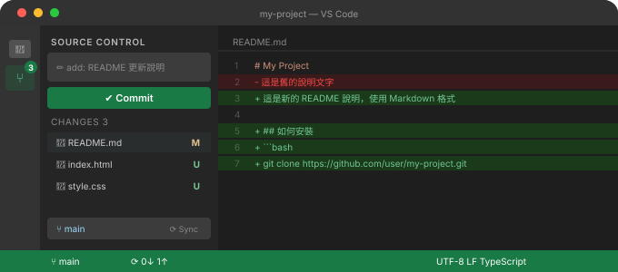

Chapter 3
用 VS Code 開始第一個版本控制專案
這一章從開啟資料夾開始，帶你用 VS Code 的圖形介面完成整個 Git 初始化流程，不需要背太多指令。
開啟專案資料夾
先在電腦上建立一個空資料夾，取一個你看得懂的名稱，例如 my-project。
開啟 VS Code
從桌面或開始選單啟動 VS Code。
File → Open Folder
選擇你剛剛建立的空資料夾，VS Code 會以這個資料夾作為工作區根目錄。
建立第一個檔案
在左側 Explorer 面板裡點擊新增檔案，命名為 index.html，輸入幾行內容存檔。
初始化 Git
資料夾本身只是一般目錄，要讓 Git 開始追蹤，需要先執行 init。
在 VS Code 開啟內建終端機（Ctrl + `），輸入：
git init這個指令會在資料夾裡建立一個隱藏的 .git 目錄，Git 的所有版本紀錄都存放在這裡。
每個專案只需要執行一次 git init。已經從 GitHub clone 下來的專案則不需要再 init，因為已經包含 .git。
認識 Source Control 面板
點擊左側工具列的分支圖示（或按 Ctrl+Shift+G），你會看到 Source Control 面板。

- Changes：列出所有被修改或新增的檔案
- Staged Changes：已加入暫存區、準備被 commit 的檔案
- Message 欄位：填寫這次 commit 的說明文字
VS Code 的 Source Control 面板就是 git add、git commit 的視覺化操作。兩種方式都可以，熟悉哪種就用哪種。
建立第一個 commit
Stage 變更
在 Changes 清單裡，點擊檔案旁的 + 圖示，把檔案移到 Staged Changes。
填寫 commit message
在上方輸入欄填入說明，例如：add index.html。清楚說明這次改了什麼。
點擊 Commit
按下 ✓ 或點擊 Commit 按鈕，第一個版本紀錄就建立了。
或者你也可以用終端機完成同樣的事：
git add .
git commit -m "add index.html"連接遠端 repository
本機的 commit 只存在你的電腦裡。要推到 GitHub，需要先建立遠端連結。
先在 GitHub 建立一個新的空 repository（不要勾選 Initialize with README），然後在終端機執行：
git remote add origin https://github.com/your-account/my-project.git
git branch -M main
git push -u origin main-u origin main 是設定預設的上游分支。之後推送只需要 git push。